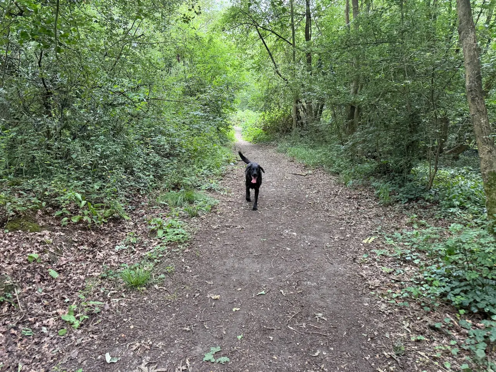
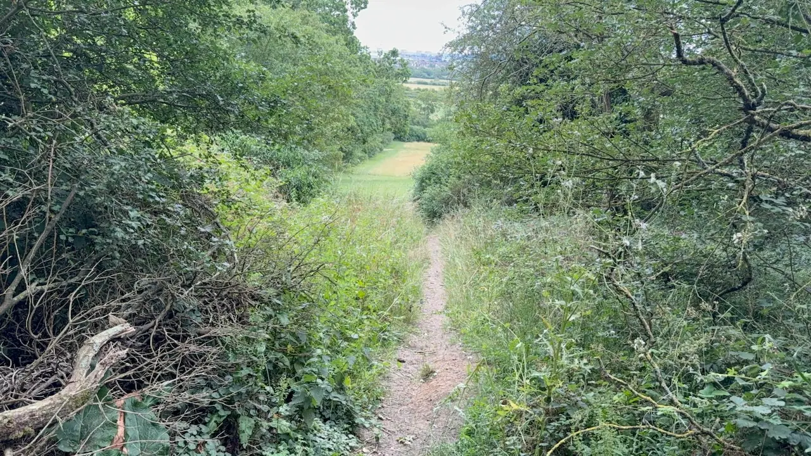
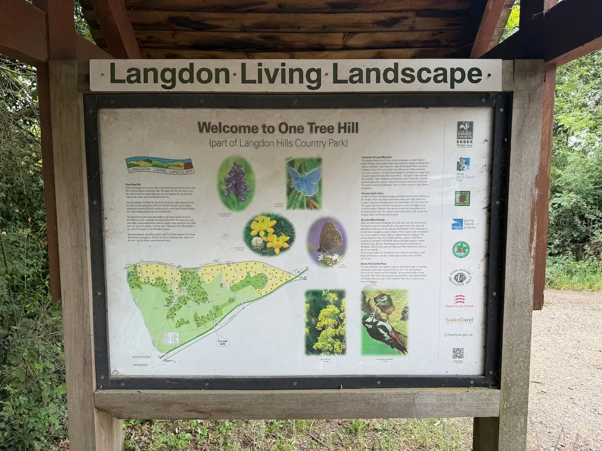
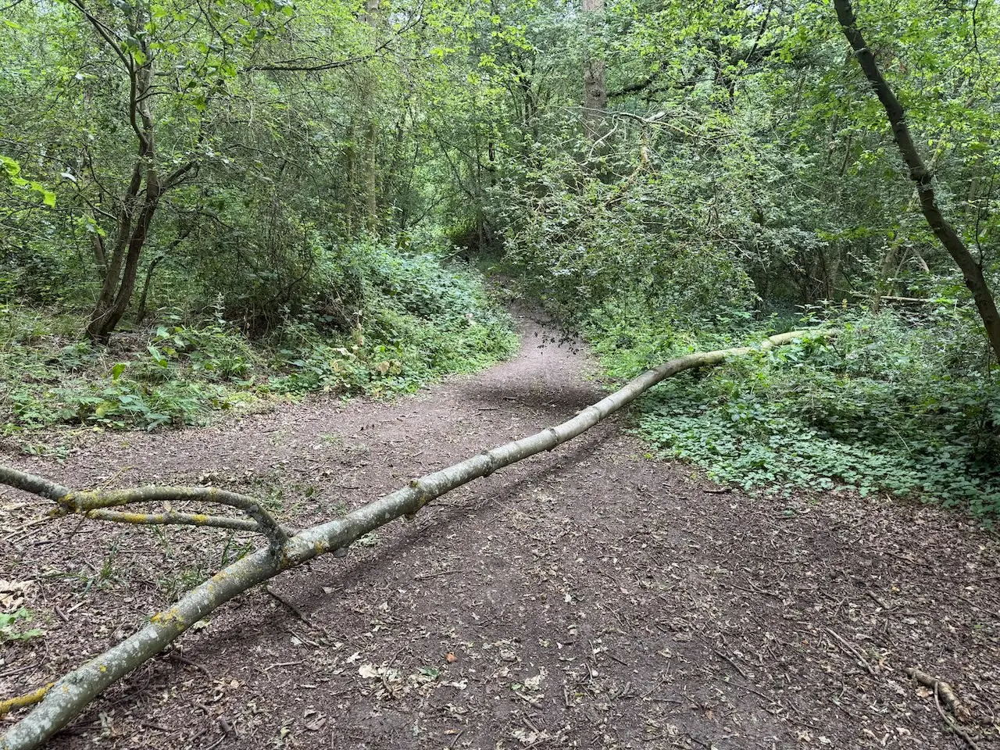
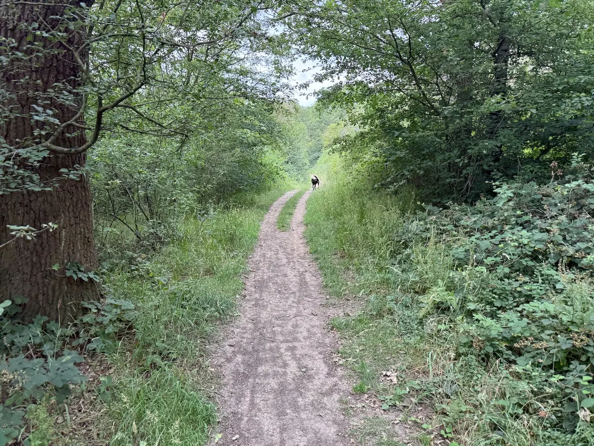
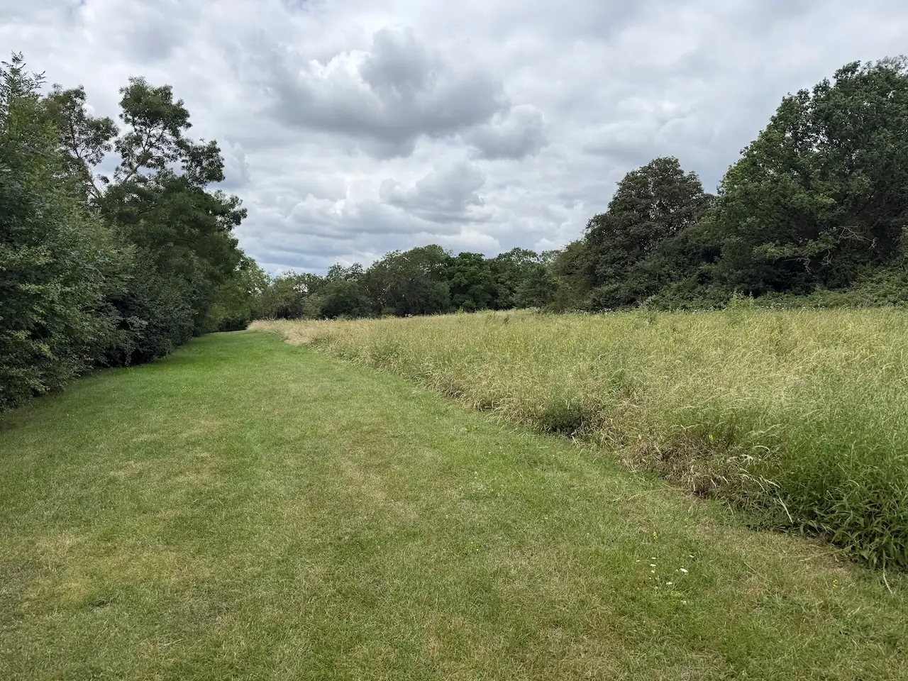
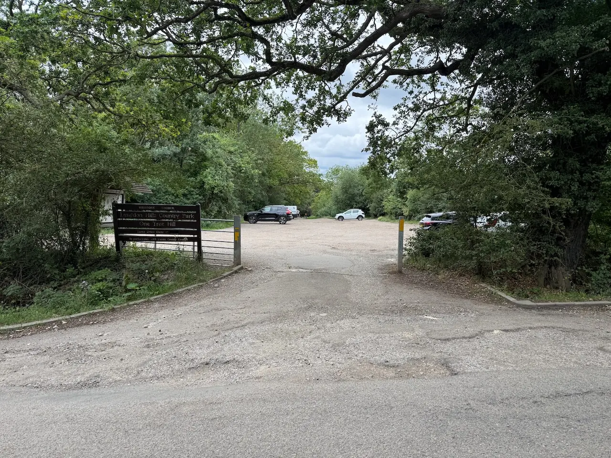
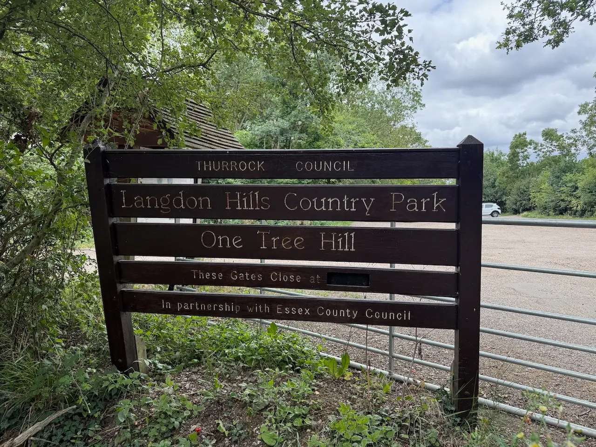

Langdon Hills Country Park - One Tree Hill
One Tree Hill is one of south Essex's hidden gems, offering peaceful woodland trails and some of the finest views in the county. It's a fantastic choice for dogs and owners looking to escape the crowds and enjoy a quieter walk.
Local tip: Don't miss the viewpoint near the summit. On a clear day you can see across much of south Essex, making it one of the best reward-to-effort walks in the county.
At a glance
Honest ratings, so you can decide in seconds whether it suits your dog.
How we rate this
- ★☆☆☆☆ Busy, narrow paths, dogs everywhere
- ★★☆☆☆ Often busy, few escape routes
- ★★★☆☆ Mixed, depends on time of day
- ★★★★☆ Generally quiet with space to move away
- ★★★★★ Excellent visibility and lots of space
How we rate this
- ★☆☆☆☆ Long, difficult, overwhelming
- ★★☆☆☆ Not ideal for young dogs
- ★★★☆☆ Fine with breaks
- ★★★★☆ Great starter walk
- ★★★★★ Perfect for puppies
How we rate this
- ★☆☆☆☆ Long and strenuous - tough for older dogs
- ★★☆☆☆ Some demanding stretches or rough ground
- ★★★☆☆ Doable at a gentle pace, with a few harder bits
- ★★★★☆ Mostly easy going with places to rest
- ★★★★★ Short, flat and gentle - perfect for seniors
How we rate this
- ★☆☆☆☆ Impossible
- ★★☆☆☆ Some sections manageable
- ★★★☆☆ Mostly accessible
- ★★★★☆ Easy with care
- ★★★★★ Fully accessible
How we rate this
- ★☆☆☆☆ No water
- ★★☆☆☆ Water but difficult access
- ★★★☆☆ Small streams/seasonal water
- ★★★★☆ Good swimming spots
- ★★★★★ Destination for water-loving dogs
How we rate this
- ★☆☆☆☆ Lead essential
- ★★☆☆☆ Very few opportunities
- ★★★☆☆ Some suitable areas
- ★★★★☆ Mostly suitable with recall
- ★★★★★ Excellent off-lead freedom
How we rate this
- ★☆☆☆☆ Completely exposed
- ★★☆☆☆ Limited shade
- ★★★☆☆ Some shaded stretches
- ★★★★☆ Mostly shaded
- ★★★★★ Woodland cover throughout
How we rate this
- ★☆☆☆☆ Bring a towel and spare clothes
- ★★☆☆☆ Expect muddy paws most of the year
- ★★★☆☆ Mud after rain
- ★★★★☆ Occasional puddles
- ★★★★★ Trainers stay clean
Photo gallery
See what it actually looks like before you go.









Walk Route
Getting there
Parking & directions. There are two main car parks on One Tree Hill Road - both free.
Make a Day of It
Already heading to Basildon? Filter and sort the dog-friendly places other local owners pair with this walk.
Hope Coffee
2.4 mi • 7 minsAn independent family-run coffee shop serving great coffee, homemade cakes, iced drinks and pup cups for visiting dogs.
Langdon Nature Discovery Park Cafe
2.5 mi • 7 minsA friendly café serving sandwiches, toasties, jacket potatoes, locally baked cakes and quality coffee in the heart of the nature reserve.
Inn on the Green
2.5 mi • 7 minsA historic village pub with over 400 years of history, a beer garden, live sport and a friendly welcome for dogs and families.
The Shepherd & Dog
4.0 mi • 12 minsAward-winning family-run country pub serving homemade food, with a beautiful beer garden and over 300 years of history.
The Lobster Smack
5.2 mi • 15 minsA characterful waterside pub with estuary views, outdoor seating and a great spot to relax after a walk.
The Woodmans Arms
6.6 mi • 19 minsA welcoming dog-friendly pub serving classic favourites, fresh pizzas and a special Woofmans menu just for four-legged visitors.
The Jobber's Rest
7.5 mi • 22 minsA welcoming country pub with cosy snugs, a large garden, seasonal food and a dedicated dog menu for four-legged visitors.
The Hoop
8.0 mi • 23 minsAward-winning gastro pub with a large enclosed beer garden, real ales and a welcoming traditional atmosphere.
The Bakers Arms
8.1 mi • 23 minsA welcoming country pub with great food, outdoor seating and a dog-friendly atmosphere year-round.
The Garden Coffee Shop & Diner
8.7 mi • 25 minsA dog-friendly café at Damyns Hall Aerodrome serving breakfast, lunch and coffee with outdoor seating overlooking the airfield.
White Hart Inn
9.4 mi • 27 minsA welcoming village pub serving freshly prepared food, seasonal specials and renowned Sunday roasts.
The Reservoir Dogs Cafe
9.7 mi • 28 minsA dog-loving vintage tea room serving coffee, cakes and special treats for four-legged visitors.
Explore Nearby
Other dog-friendly walks within easy reach of Langdon Hills Country Park - One Tree Hill.

Langdon Hills Country Park - Westley Heights
Explore Walk →
Langdon Nature Discovery Park
Explore Walk →
Thameside Nature Discovery Park
Explore Walk →Hadleigh Country Park
Explore Walk →
Crowsheath Wood Nature Reserve
Explore Walk →Thames Chase Forest Centre
Explore Walk →Community tips
From local dog owners who've walked it.
★ This walk doesn't have any community tips yet.
Know something that would help another dog owner?
- Is there a quieter entrance?
- Does it get muddy after heavy rain?
- Where's the best place for a swim?
- Any livestock or seasonal hazards?
- Is there a hidden picnic spot?
Help keep this guide up to date
We'd love your help keeping Dogs of Essex accurate and up to date.